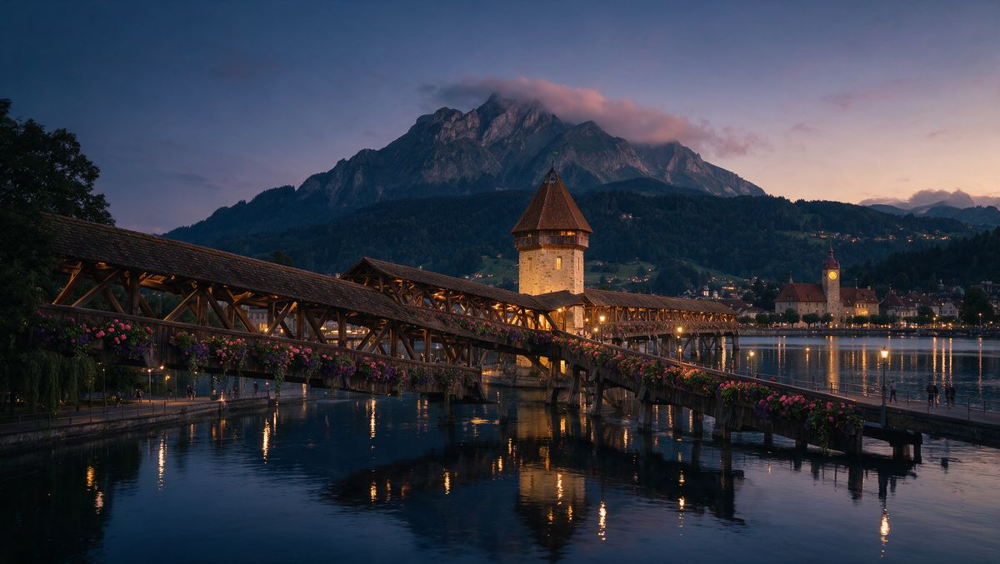

Door-to-door private transfer from Zurich Airport (ZRH) to Lucerne: meet & greet at arrivals, flight tracking and a fixed price agreed before you fly — 67 km in about 50 min, in a Mercedes with a professional chauffeur.
The fare to Lucerne is agreed at booking — traffic and waiting never change it.
Your chauffeur waits inside the terminal with a name board and helps with your luggage.
We monitor your flight and adjust the pickup for delays or early landings, free of charge.
S-Class, E-Class, V-Class or Sprinter — up to 16 passengers with luggage.

Lucerne is the closest of Switzerland's postcard towns — about 67 km and 50 minutes from Zurich Airport. Your chauffeur takes you door to door: no train changes with luggage, no queues.
Many guests add a scenic stop on the way or book the return with a sightseeing detour around Lake Lucerne — ask when you book and we plan it into the ride.
Tell us your flight number — the car will be waiting when you land.
Book now→